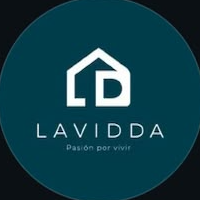
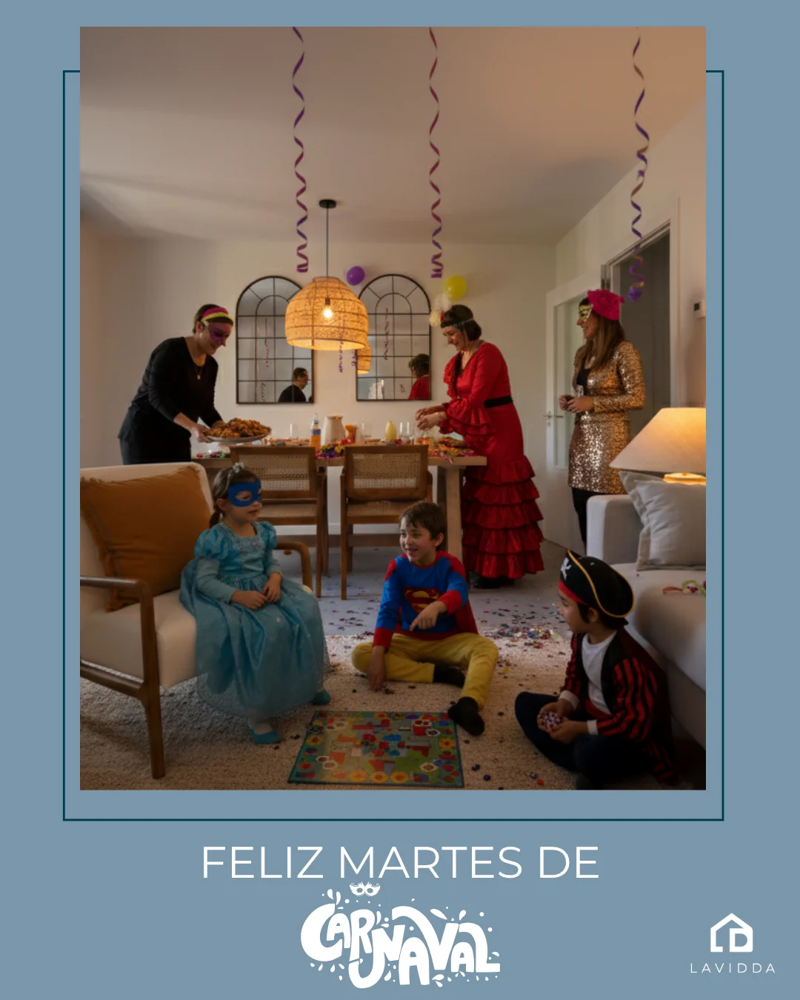
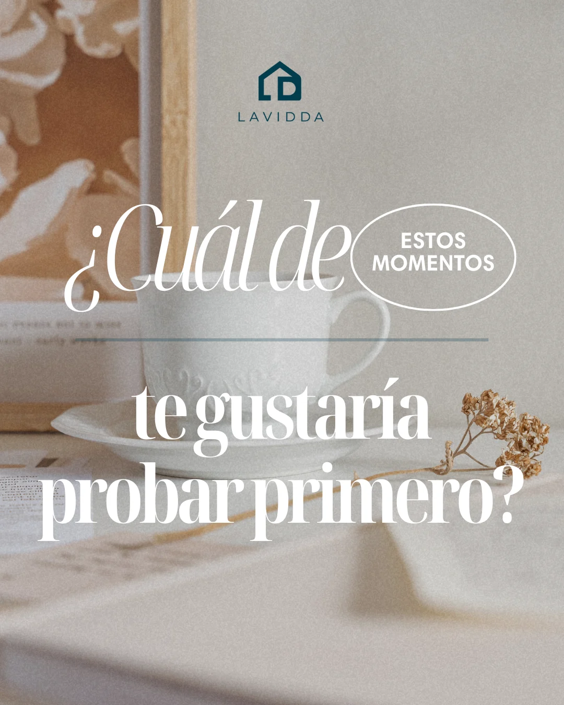
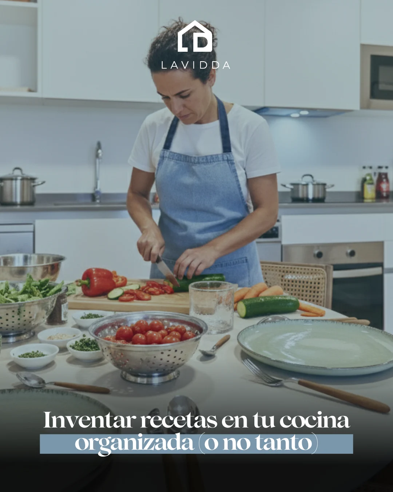
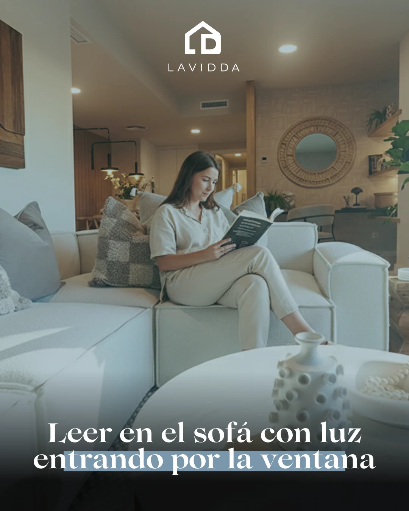
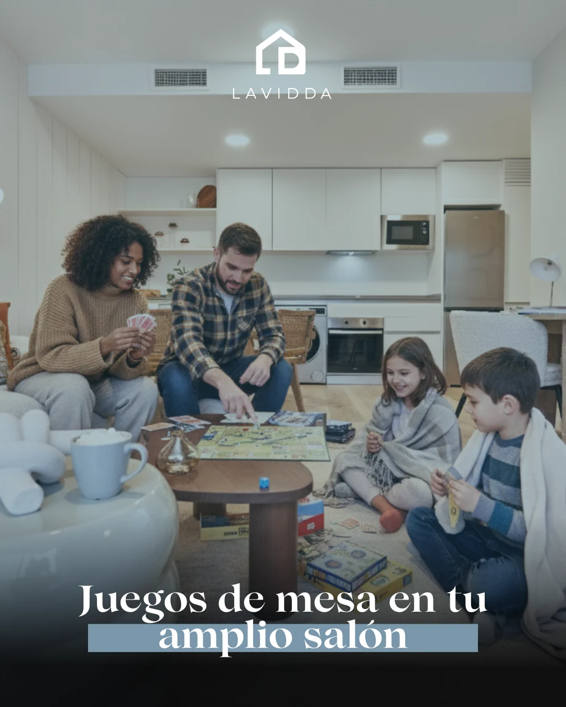
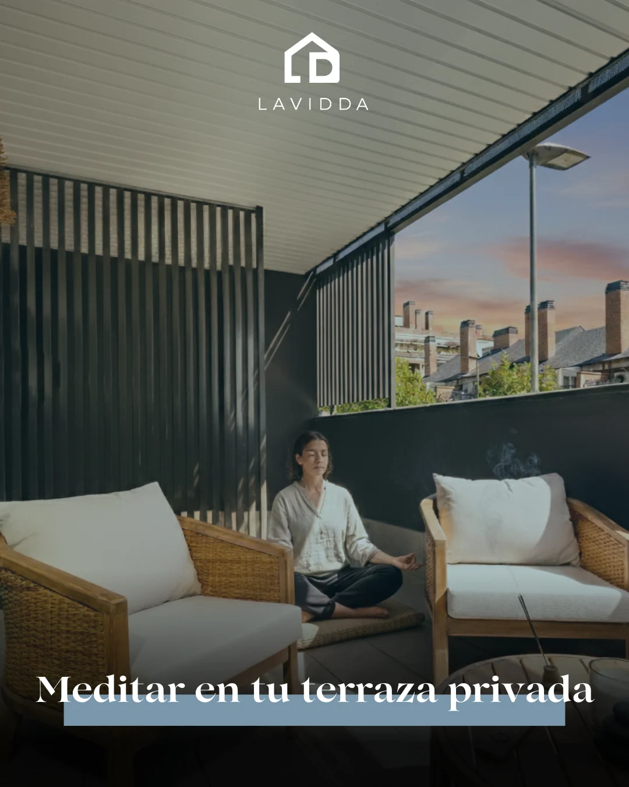
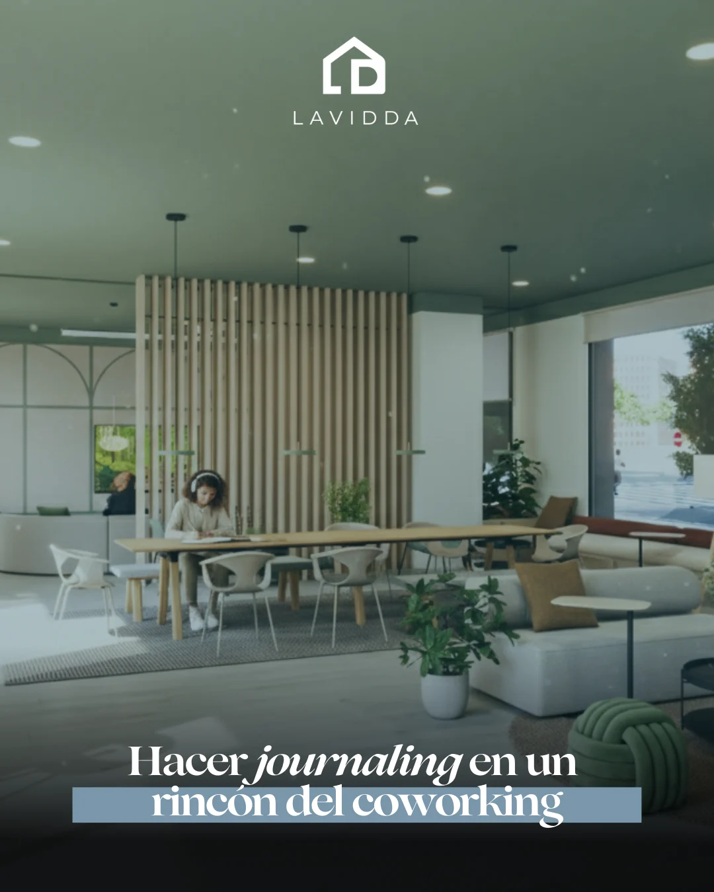
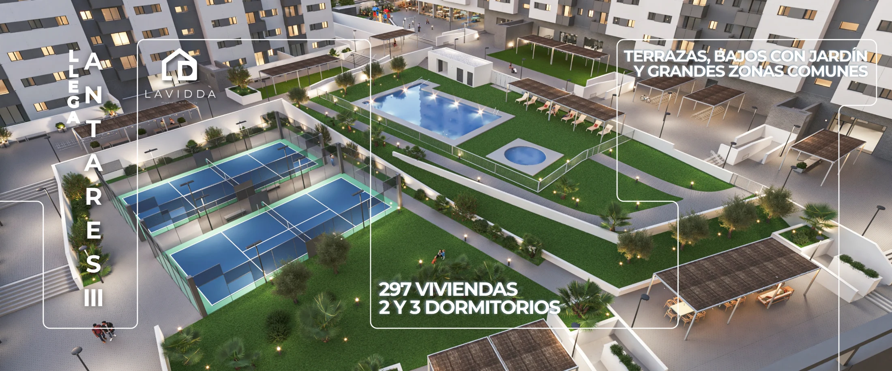

Lavidda · redesLavidda · social
Instagram · contenido mensualInstagram · monthly content

LAVIDDAViviendas de obra nueva en alquiler con servicios exclusivos.
Sevilla, Madrid y pronto Valencia y Alicante.
Pasión por vivir
linktr.ee/lavidda





Contenido mensual para una marca de alquiler de obra nueva: carruseles, efemérides, promociones y reels.Monthly content for a new-build rental brand: carousels, seasonal posts, promotions and reels.
Lavidda alquila viviendas de obra nueva con servicios en Sevilla y Madrid. En Instagram la marca tenía que enseñar cómo se vive en sus edificios, no solo los pisos.Lavidda rents new-build homes with services in Seville and Madrid. On Instagram the brand had to show how people live in its buildings, not just the flats.
- Una línea editorialAn editorial line
Serif en cursiva, azul empolvado y fotografía de interior: se reconoce en el feed antes de leer el logo.Italic serif, dusty blue and interior photography: recognisable in the feed before you read the logo.
- Momentos en casaMoments at home
Carruseles y efemérides que llevan la vida diaria a cada espacio: el salón, la cocina, la terraza, el coworking.Carousels and seasonal posts that bring daily life into each space: living room, kitchen, terrace, coworking.
- Promociones clarasClear promotions
Precio, dormitorios y zonas comunes en un vistazo, con la web siempre a mano.Price, bedrooms and shared spaces at a glance, with the website always in view.
Carruseles, de la portada al cierreCarousels, from cover to close
Portada, una idea por slide y cierre con pregunta a la comunidad. Desliza para verlo.Cover, one idea per slide and a closing question to the community. Swipe through it.




